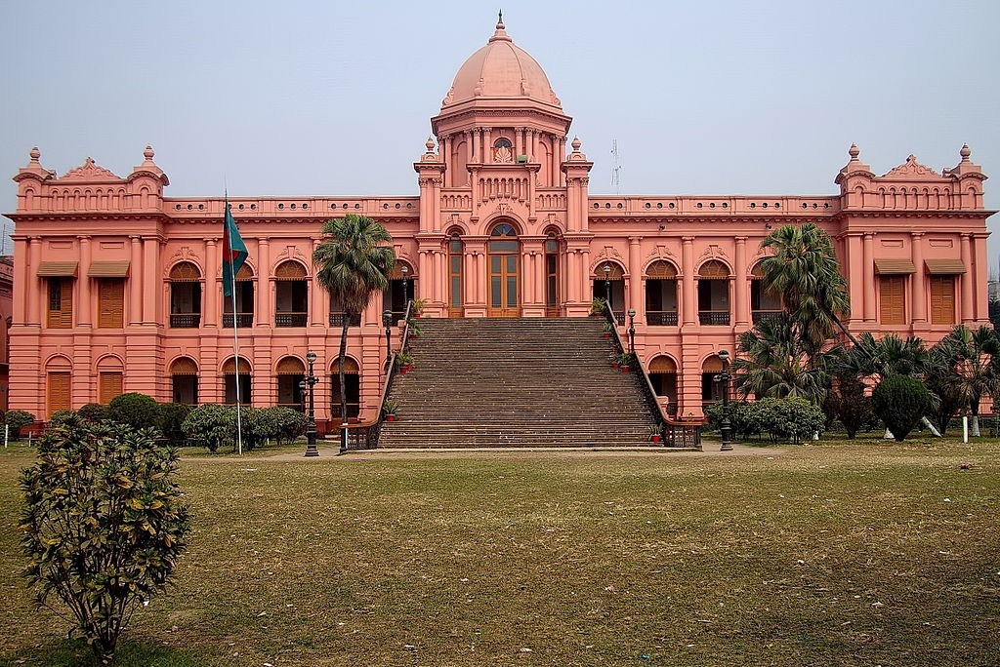
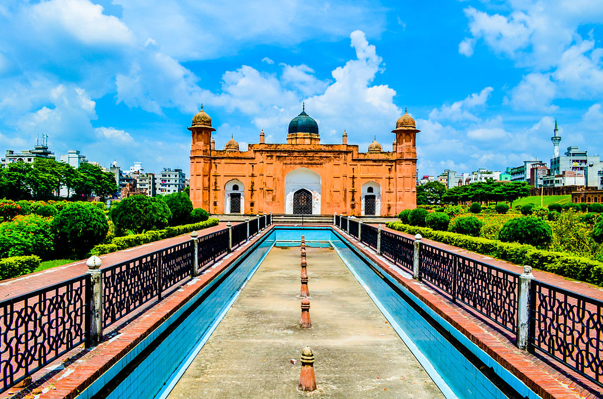
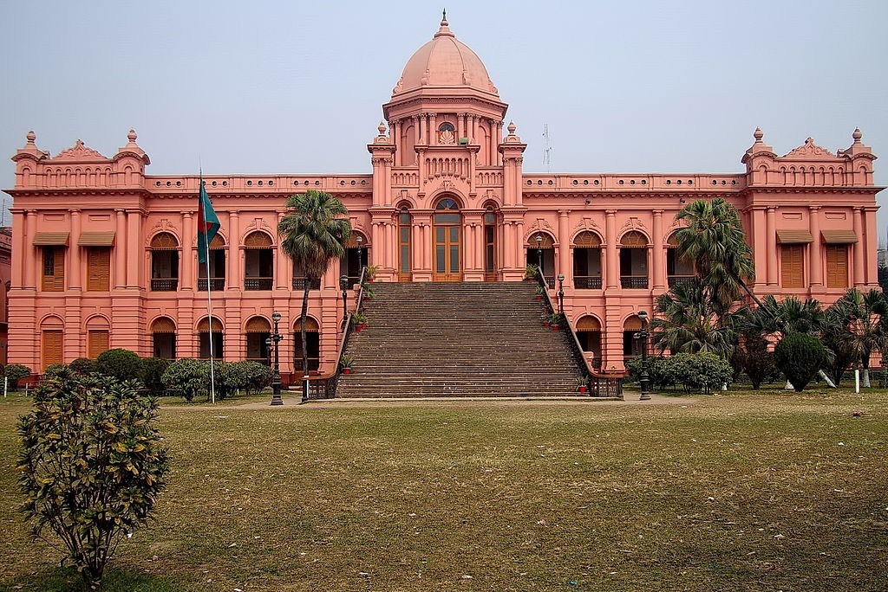
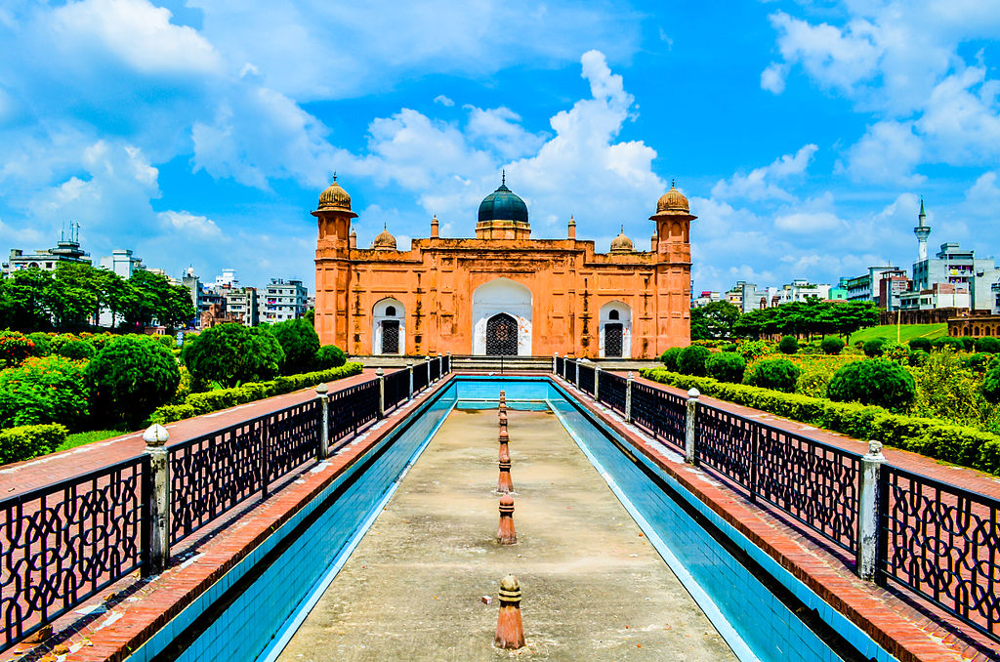
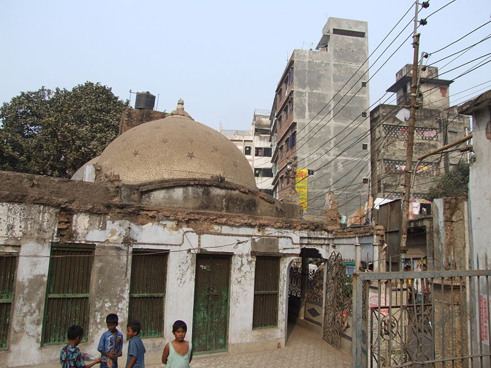
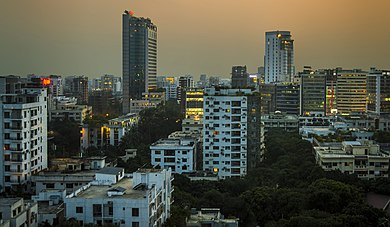
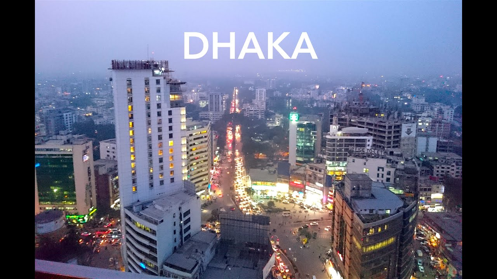
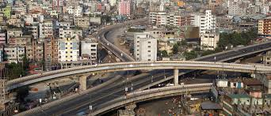
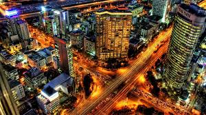
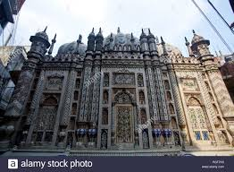

The History of Dhaka
Dacca or Dhaka is the capital and one of the oldest cities of Bangladesh. The history of Dhaka begins with the existence of urbanised settlements in the area that is now Dhaka dating from the 7th century CE. The city area was ruled by the Buddhist Pala Empire before passing to the control of the Sena dynasty in the 9th century CE.[2] After the Sena dynasty, Dhaka was successively ruled by the Turkic and Afghan governors descending from the Delhi Sultanate before the arrival of the Mughals in 1608. After Mughals, British ruled the region for 200 years until the independence of India. In 1947, Dhaka became the capital of the East Bengal province under the Dominion of Pakistan. After the independence of Bangladesh in 1971, Dhaka became the capital of the new state.
 



Dhaka came into the domain of Mughal Empire during the reign of Emperor Akbar (r. 1556–1605) after the Battle of Tukaroi.[16] Dhaka was referred as a Thana (a military outpost).[17] Dhaka was situated in Bhati region which hosted several rebel forces led by Bara-Bhuiyans from mid to late 16th century. After the leader of Bara-Bhuiyans, Musa Khan, was subdued by Mughal General Islam Khan Chisti in 1608, Dhaka again went directly under control of Mughals. The newly appointed subahdar of Bengal Subah, Islam Khan transferred the capital from Rajmahal to Dhaka in 1610.[8] He also renamed Dhaka as Jahangirnagar (City of Jahangir) after the Emperor Jahangir. Due to its location right beside some main river routes, Dhaka was an important centre for business. The Muslin fabric was produced and traded in this area. He successfully crushed the regional revolts in Jessore, Bakla (present days Barisal) and Bhulua (present days Noakhali) and brought almost the entire province under the Mughal domain.[18] As the next subahdar, Prince Shuja built Bara Katra between 1644 and 1646 in Dhaka to serve as his official residence. He also patronised building of Hussaini Dalan, a Shia shrine though he himself was a Sunni. In the late 1640s, for personal and political reasons, he moved the capital back to Rajmahal. Dhaka became a subordinate station. Due to political turmoil, Emperor Aurangzeb sent Mir Jumla to deal with Prince Shuja.[19] He pursued Shuja up to Dhaka and reached the city on 9 May 1660. But Shuja had already fled to Arakan region. As Jumla was ordered to become the next subahdar of Bengal Subah, Dhaka was again made the capital of the region.[19] He was engaged in construction activities in Dhaka and its suburbs – two roads, two bridges and a network of forts. A fort at Tangi-Jamalpur guarded one of the roads connecting Dhaka with the northern districts which is now known as Mymensingh Road.[19] He built Mir Jumla Gate at the northern border to defend the city from the attacks of Magh pirates. Italian traveller Niccolao Manucci came to Dhaka in 1662–63.[20] According to him, Dhaka had a large number of inhabitants compare to the size of the city. Most of the houses were built of straw. There were only two kuthis – one of the English and the other of the Dutch. Ships were loaded with fine white cotton and silk fabrics. A large number of Christians and white and black Portuguese resided in Dhaka.[20] Thomas Bowrey, a British merchant sailor, visited Dhaka in the 1670s. In his book, A Geographical Account of Countries Round the Bay of Bengal, he mentioned:[21] The City of Dhaka is a very large, spacious one, but stands on low, marshy, swampy ground, and the water of that ground is very brackish, which is the only inconvenience. It has, however, some very fine conveniences that compensate, having a very fine and large river that runs close by the city walls, navigable by ships of 500 or 600 tonnes burden. The water of the river, being an arm of the Ganges, is extraordinarily good, but is some distance for fetching and carrying for some residents of the city, the city being not less than 40 English miles in circumference. It is an admirable city for its greatness, for its magnificent buildings, and the multitude of its inhabitants. A very great and potent, permanent, and paid army is based here, in a constant state of readiness. Also, many large, strong, and stately elephants, trained for battle, which are kept close to the palace. Shaista Khan, governor of Bengal (1664–1688) Construction of Lalbagh Fort was commenced in 1678 by Prince Muhammad Azam during his 15-month-long governorship of Bengal, but before the work could complete, he was recalled by Emperor Aurangzeb. The largest expansion of the city took place under the next Mughal subahdar Shaista Khan (1664–1688). The city then stretched for 12 miles in length and 8 miles in breadth and is believed to have had a population of nearly a million people.[22] The Chawk Mosque, Babubazar Mosque, Sat Gumbad Mosque, Choto Katra were originally built during this period. He also built tombs of Bibi Pari, Bibi Champa and Dara Begum.[8] A French traveller, Jean-Baptiste Tavernier, arrived Dhaka on 13 January 1666 and met Shaista Khan.[10]:144 He referred Shaista Khan as "the uncle of King Aurangzeb and the cleverest man in all his kingdom".[10]:144 Prince Azim-ush-Shan became the subahdar of Bengal Subah in 1697. Due to conflict with Diwan Murshid Quli Khan,[23] he transferred the capital from Dhaka to Rajmahal and then to Patna in 1703.[24] Murshid Khan also shifted his office to Mauksusabad (later renamed it to Murshidabad).[25]
  
Following the Partition of India in August 1947, Dhaka became the capital of East Bengal under the Dominion of Pakistan. The city witnessed serious communal violence that left thousands of people dead.[citation needed] A large proportion of the city's Hindu population departed for India, while the city received hundreds of thousands of Muslim immigrants from the Indian states of West Bengal, Assam and Bihar. Population increased from 335,925 in 1951 to 556,712 in 1961 registering an increase of 65.7 percent.[70][71] As the centre of regional politics, Dhaka saw an increasing number of political strikes and incidents of violence. The proposal to adopt Urdu as the sole official language of Pakistan led to protest marches and strikes involving hundreds of thousands of people in Bengali Language Movement. The protests soon degenerated into widespread violence after police firing killed students who were demonstrating peacefully. Martial law was imposed throughout the city for a long period of time. The arrest of the Bengali politician Sheikh Mujibur Rahman in 1968 would also spark intensive political protests and violence against the military regime of Ayub Khan. The 1970 Bhola cyclone devastated much of the region, killing numerous people. More than half the city of Dhaka was flooded and waterlogged, with millions of people marooned. The same year, Sheikh Mujibur Rahman won a landslide victory in general election. He was elected as the next president of Pakistan. However, the West Pakistan's military rulers and even the largest opposition party's (PPP) leader Zulfiker Ali Bhutto refused to hand over the presidency to East Pakistan leadership. The following year saw Sheikh Mujib hold a massive nationalist gathering on 7 March 1971 at the Race Course Ground that attracted an estimated one million people. Galvanising public anger against ethnic and regional discrimination and poor cyclone relief efforts from the central government, the gathering preceded near total consensus among East Pakistan population for independent movement. In response, on 25 March 1971 in the middle of the night, the Pakistan Army launched Operation Searchlight, which led to the arrests, torture and killing of hundreds of thousands of people – just in that night alone. As a result, on behalf of East Pakistan leader Sheikh Mujibur Rahman, a Bengali army Major named Ziaur Rahman (later General and President) declared Bangladesh's independence on 26 March 1971. This resulted in further mass genocide of approximately 3 million people. Citizens and intellectuals from Dhaka was the largest victim of this mass genocide. The fall of the city to the Indian Army on 16 December 1971 marked the creation of the independent state of Bangladesh. Dhaka became the capital of Bangladesh. Several prominent architectural development took place in Dhaka during this period. Holy Family Hospital was built in March 1953.[66] New Market was established in Azimpur in 1954.[66] Dhaka College was moved to Dhanmondi in July 1956.[66] Kamalapur railway station was established in 1969.
  